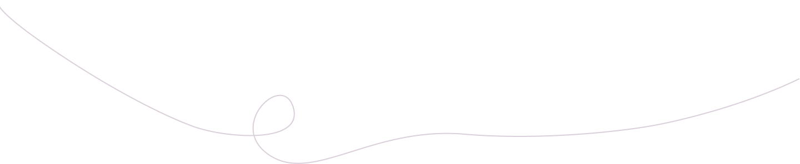

Ergotaksio
Ephemeral presences of dwelling
In what ways does the space, as another agent, interact with the members of the school community in everyday life? How these interweavings shape and affect learning and transmission processes, as well as the ecology of social relations?
About
Ιnside school environment, an unusual dwelling emerges by incorporating ephemeral spatial formulations; a minimum, playfully reversible spatial structure, from light and recyclable materials built by children and teachers where it means to be a common ground of multiple gatherings, in order to reveal the active and dialogical aspect of architecture. An in-between space of interaction that can work as a social “condenser” where children are encouraged to develop their desires, skills and knowledge and interact with others by inventing ways of being together as a community as well as promoting formal and informal ways of learning and exchanging.
